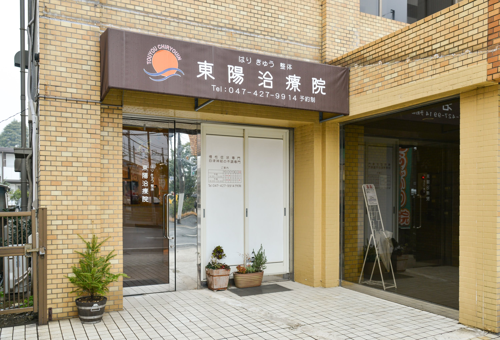
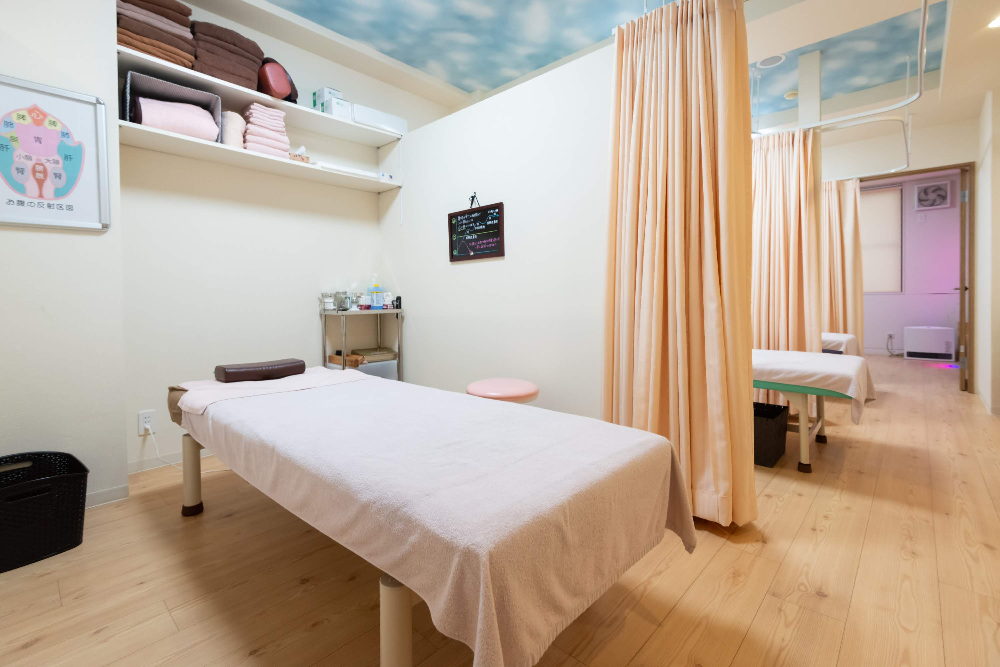

施術/料金
自律神経の乱れに特化した
「お腹ほぐし整体」
東陽治療院では、自律神経の乱れの原因は内臓の疲れと考え、腹診術を主とした、江戸時代前期の鍼医「御園夢分斎」の打診術と東洋医学の考え方を整体術に落とし込んだ、まったく新しい施術法を受けられます。
内臓の疲れが取れれば、今まで病院や整体、マッサージでは良くならなかった自律神経の乱れも根本的な改善に導かれていきます。
「お腹ほぐし整体」を受ける事ができるのは、当院を含む千葉県で数少ない院しかございません。
お客様一人ひとりに合わせた施術
内臓の疲れの原因を、19年の臨床経験の中で見えてきた5つのタイプに分類。一人ひとりに合った施術をいたします。
再発を防ぐ
自宅でできるセルフケアを伝授
当院では、再発を防ぐためのセルフケアも指導いたします。

ご料金
HPからのご予約で
初回 : 3,960円（税込）
※通常価格10,560円（税込）
ご予約時に「HPを見た」とお伝えください。
2回目以降 : 7,260円（税込）

ご予約される方へ
初診の時の施術時間は、60分ほどかかります。
2回目以降の施術時間は20分程度です。
ご予約時間の10分前においで下さい。
ご予約前に必ずお読みください
こんな方には当院の施術は
おすすめできません。
ボキボキするような強い刺激が欲しいという方
時間を長く、気持ちよくなどの慰安的な目的の方
１回、２回で治して終わりにしてほしいという方
このような方におすすめの施術です。
お悩みの症状を根本から改善していきたい方
改善だけではなく、再発を予防したい方
仕事や趣味など、やりたいことや出来なくなったことを
思いきり出来るようになりたい方